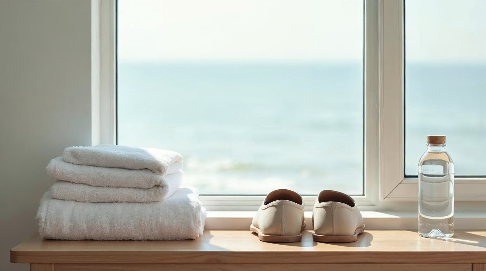
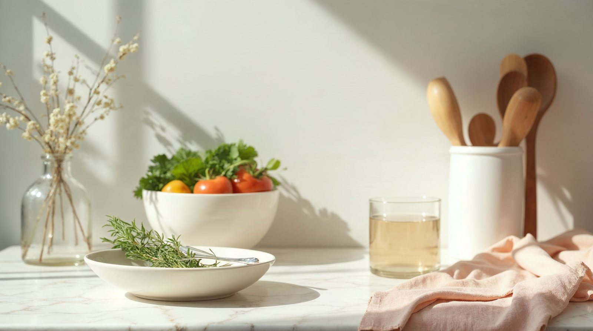
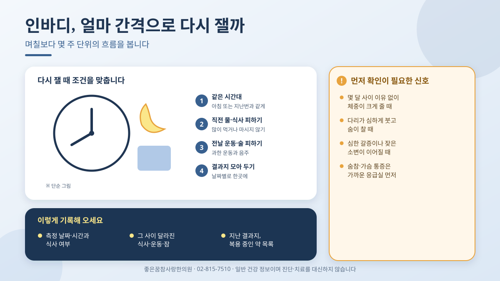

이종호 한의사 감수좋은꿈참사랑한의원 대표원장 (한의사 면허번호 19769)발행 2026-11-25 · 수정 2026-11-26
이 글의 차례
- 왜 간격을 두고 재면 좋을까요
- 왜 같은 몸인데 측정 조건에 따라 숫자가 달라질까요
- 근육과 체지방은 얼마나 천천히 움직일까요?
- 다시 잴 날은 이렇게 정해 보세요
- 예를 들면 이런 경우입니다
- 스스로 점검해 보세요
- 먼저 이렇게 여쭙니다
- 일상에서 먼저 해 볼 수 있는 것
- 한의원에서 함께 살필 수 있는 경우
- 이런 경우에는 간격을 따로 이야기해 봅니다
- 측정 날 아침에는 이 순서로 준비하세요
- 자주 하는 오해
- 숫자에 마음이 흔들릴 때
- 얼마나 지켜보고 언제 상담할까요
- 처음 오시면 이렇게 살핍니다
- 결과지는 이 순서로 나란히 보세요
- 잠과 식사 리듬이 숫자에 남기는 흔적
- 결과지는 이렇게 모아 두세요
- 측정과 측정 사이에는 이렇게 지내 보세요
- 헷갈리기 쉬운 점
- 이렇게 기록해 오시면 상담이 쉬워집니다
- 이런 증상은 먼저 확인이 필요합니다
인바디를 재고 나면 다음 주에 다시 재 보고 싶어지는 분이 많습니다. 하지만 체성분은 물, 식사, 운동에 따라 며칠 사이에도 흔들려서 너무 자주 재면 오히려 흐름이 잘 보이지 않습니다. 좋은꿈참사랑한의원에서는 몇 주 간격으로 같은 조건에서 다시 재어 방향을 보는 것을 권합니다.
예를 들어 지난주보다 체중이 1kg 늘었더라도, 전날 저녁을 짜게 먹고 물을 많이 마셨다면 체수분이 잠시 늘어난 것일 수 있습니다. 반대로 몇 주에 걸쳐 근육량이 조금씩 줄고 체지방이 늘었다면 식사와 활동을 다시 살펴볼 신호가 됩니다. 그래서 한두 번의 숫자보다 여러 번의 결과를 나란히 놓고 보는 것이 중요합니다.
왜 간격을 두고 재면 좋을까요
- 체수분은 전날 짠 음식, 운동, 잠에 따라 쉽게 달라질 수 있습니다.
- 근육량과 체지방은 며칠보다 몇 주에 걸쳐 천천히 움직이는 경우가 많습니다.
- 측정 시간과 식사 여부가 다르면 같은 몸이라도 숫자가 달라질 수 있습니다.
- 숫자 하나에 마음이 흔들리면 생활 계획을 자주 바꾸게 되기 쉽습니다.
- 생리 주기에 따라 몸이 붓는 시기에는 체수분 숫자가 달라질 수 있습니다.
인바디를 다시 재는 간격을 정하는 일은 결국 언제 결과지를 들여다볼지 정하는 일입니다. 간격이 너무 짧으면 작은 흔들림에 마음이 쓰이고, 너무 길면 생활을 바꾼 뒤의 변화를 돌아볼 기회를 놓치기 쉽습니다. 이 글에서는 그 사이 어디쯤에서 날짜를 잡으면 좋을지, 결과지는 어떻게 나란히 보면 좋을지 차례로 말씀드리겠습니다.
왜 같은 몸인데 측정 조건에 따라 숫자가 달라질까요
체성분 측정기는 몸에 아주 약한 전류를 흘려 보내고, 그 전류가 얼마나 잘 지나가는지를 바탕으로 근육과 지방, 물의 양을 계산합니다. 전류는 물이 많은 조직을 따라 잘 흐르기 때문에, 몸속 물이 늘거나 한쪽으로 쏠리면 계산된 숫자도 함께 달라집니다.
그래서 짠 음식을 먹은 다음 날, 땀을 흠뻑 흘린 직후, 오래 서 있어 다리가 부은 저녁에는 같은 몸이라도 결과지가 조금씩 다르게 나옵니다. 측정기가 틀린 것이 아니라 그날 몸속 물의 상태가 다른 것이어서, 조건을 맞추는 일이 그만큼 중요합니다.
근육과 체지방은 얼마나 천천히 움직일까요?
체수분은 하루 안에서도 오르내리지만, 근육과 체지방은 식사와 활동이 몇 주 동안 쌓여야 방향이 드러나는 경우가 많습니다. 그래서 일주일 만에 다시 잰 결과지에서 근육량이 0.3kg 줄었다고 해도, 그것이 실제 변화인지 측정 조건의 차이인지 가려내기 어렵습니다.
저는 결과지를 볼 때 숫자 하나의 크기보다 화살표의 방향을 먼저 봅니다. 세 번, 네 번 이어서 잰 결과가 같은 쪽을 가리키면 그때는 몸이 그쪽으로 움직이고 있다고 이야기할 수 있습니다. 한 번 튀어 오른 숫자는 다음 측정에서 제자리로 돌아오는 일도 흔합니다.
다시 잴 날은 이렇게 정해 보세요
- 식사나 운동 계획을 새로 시작했다면, 시작한 날을 기준으로 몇 주 뒤를 다음 측정일로 달력에 적어 둡니다.
- 진료 날짜와 측정 날짜를 맞춰 두면, 결과지를 보며 그사이 생활 이야기를 바로 이어서 나눌 수 있습니다.
- 명절, 휴가, 회식이 몰린 주처럼 식사가 크게 달라진 직후는 피하고, 생활이 평소로 돌아온 뒤에 잽니다.
- 감기나 장염처럼 몸이 아팠던 주는 몸속 물이 평소와 달라 숫자가 흔들릴 수 있어, 회복한 뒤로 미룹니다.
- 측정 간격을 한 번 정했다면 되도록 그 간격을 이어 가야 결과지끼리 비교하기 쉽습니다.
예를 들면 이런 경우입니다
예를 들어 저녁 식사량을 줄이고 걷기를 시작한 분이 열흘 만에 다시 쟀는데 체중이 거의 그대로라면, 실망하기보다 측정 조건부터 맞는지 봅니다. 걷기를 시작하면 다리 근육이 쓰이면서 몸속 물의 양이 잠시 달라지기도 해서, 몇 주는 더 지켜봐야 방향이 드러납니다.
예를 들어 야근이 이어지는 몇 주 동안 끼니를 거르고 밤늦게 몰아서 드신 분이라면, 체중은 비슷해도 근육량이 조금씩 줄고 체지방이 늘어나는 흐름이 보일 수 있습니다. 이럴 때는 숫자를 고치려 하기보다 식사 시간과 잠부터 되찾는 계획을 함께 세웁니다.
예를 들어 운동을 막 시작한 분이 매일 재고 싶어 하신다면, 측정 대신 걷기 시간이나 계단 오른 층수처럼 날마다 적을 수 있는 기록을 따로 권합니다. 체성분은 정해 둔 날에만 재고, 그사이에는 생활 기록이 흐름을 보여 주게 하는 것입니다.
스스로 점검해 보세요
- 지난번 측정과 이번 측정 사이가 일주일도 되지 않는다
- 측정할 때마다 시간대가 오전, 저녁으로 바뀐다
- 결과지가 집 여기저기 흩어져 있어 나란히 놓고 보기 어렵다
- 체중 칸만 보고 근육량과 체지방량 칸은 잘 보지 않는다
- 숫자가 오르면 다음 날 바로 식사를 크게 줄인 적이 있다
- 다음 측정 날짜를 정하지 않고 생각날 때 잰다
두세 가지가 해당한다면 재는 횟수보다 재는 방식부터 정리해 보시면 결과지가 훨씬 읽기 쉬워집니다.
먼저 이렇게 여쭙니다
- 지난번 측정과 같은 시간대에 오셨나요?
- 측정 전 식사나 운동을 하셨나요?
- 최근 몇 주 동안 식사나 활동이 달라졌나요?
- 체중보다 더 궁금한 숫자가 있으신가요?

일상에서 먼저 해 볼 수 있는 것
- 측정 날은 아침이나 같은 시간대로 맞추기
- 측정 직전 많은 물이나 식사 피하기
- 측정 전날 과한 운동과 술 피하기
- 결과지를 날짜별로 한곳에 모아 두기
- 생리 전후처럼 몸이 붓는 시기는 측정 날짜에서 피하거나 결과지에 표시해 두기
한의원에서 함께 살필 수 있는 경우
- 체중은 그대로인데 근육량과 체지방의 방향이 궁금한 경우 결과지를 함께 봅니다.
- 식사와 잠의 리듬이 달라진 시기와 숫자 변화를 함께 살핍니다.
- 혈압·혈당 수치가 걱정되는 경우 다른 기록과 나란히 봅니다.
좋은꿈참사랑한의원에서는 결과지를 펼치기 전에 맥부터 짚으며 식사와 잠, 활동의 변화를 여쭙고, 필요하다고 판단될 때 인바디 770으로 체성분을 다시 확인합니다. 숫자는 생활 계획을 함께 정하는 참고로 쓰며, 혈압·혈당 진단과 약 조절은 내과에서 확인하도록 안내해 드립니다.
이런 경우에는 간격을 따로 이야기해 봅니다
- 어르신이 걷는 양이 줄어 다리 힘이 걱정되는 경우에는 체중보다 근육량의 흐름을 중심으로 보고, 다시 잴 시기를 진료 때 함께 정합니다.
- 출산 뒤 몸을 추스르는 시기에는 몸속 물의 변화가 커서, 숫자보다 잠과 식사, 회복 정도를 먼저 여쭙습니다.
- 식사량을 크게 줄이고 있는 분은 근육이 함께 빠지지 않는지 살펴야 해서, 결과지를 볼 때 골격근량 칸을 특히 눈여겨봅니다.
- 교대 근무처럼 생활 시간이 자주 바뀌는 분은 날짜보다 '자고 일어나 첫 식사 전'처럼 몸의 순서를 기준으로 측정 조건을 맞춥니다.
측정 날 아침에는 이 순서로 준비하세요
- 1. 전날 저녁은 평소처럼 드시고 늦은 야식과 술은 피합니다.
- 2. 측정 당일에는 든든한 식사 전에 재거나, 식사 뒤라면 두 시간쯤 지난 뒤로 잡습니다.
- 3. 오시기 전에 화장실을 다녀옵니다.
- 4. 지난번과 비슷한 가벼운 옷차림으로 오시고, 두꺼운 겉옷은 벗고 잽니다.
- 5. 지난 결과지를 챙겨 오시면 그 자리에서 나란히 놓고 볼 수 있습니다.
이 다섯 가지만 매번 같게 지켜도 결과지끼리 비교하기가 한결 편해집니다. 지키지 못한 항목이 있었다면 측정 전에 말씀해 주시면, 숫자를 볼 때 그 점을 함께 고려합니다.
자주 하는 오해
- 자주 잴수록 관리가 잘된다고 생각하기 쉽지만, 간격이 너무 짧으면 실제 변화보다 물의 흔들림을 더 많이 보게 됩니다.
- 체중이 줄기만 하면 좋은 신호라고 여기는 분이 많은데, 근육이 함께 빠졌다면 식사와 활동을 다시 살펴야 할 수 있습니다.
- 한 번 숫자가 나빠지면 그동안의 노력이 소용없었다고 느끼기 쉽지만, 한 번의 결과보다 여러 번의 흐름이 더 많은 것을 알려 줍니다.
- 측정 간격은 모두에게 같다고 생각하기 쉬운데, 생활을 바꾼 정도와 궁금한 점에 따라 진료 때 함께 정합니다.
숫자에 마음이 흔들릴 때
결과지를 받아 들고 한숨부터 쉬시는 분이 적지 않습니다. 열심히 지냈는데 숫자가 생각만큼 움직이지 않으면 속상한 것이 당연합니다. 그럴 때일수록 그 숫자가 어떤 조건에서 나왔는지, 지난 몇 주 동안 무엇을 지켜 왔는지를 함께 돌아봅니다.
숫자 때문에 다음 날부터 굶거나 무리하게 운동을 늘리면, 잠과 소화가 흐트러져 오히려 계획을 오래 이어 가기 어려워질 수 있습니다. 결과지는 생활을 조금씩 다듬는 참고로 두고, 마음이 많이 쓰이는 날에는 진료 때 편하게 털어놓아 주세요.
얼마나 지켜보고 언제 상담할까요
- 한 번 튀어 오른 숫자는 다음 정해 둔 날 같은 조건으로 다시 재어 보고 판단합니다.
- 두세 번 이어서 근육량이 줄고 체지방이 늘어나는 흐름이 보이면 식사와 활동을 함께 다시 살펴봅니다.
- 측정 날짜를 지키기 어려운 사정이 생기면 무리해서 맞추기보다 다음 진료 때 새 날짜를 정하시면 됩니다.
- 숫자보다 요즘 몸이 무겁거나 쉽게 지치는 느낌이 더 마음에 걸린다면, 측정 날짜와 상관없이 진료 때 그 이야기부터 꺼내 주세요.
- 다음 측정까지 궁금한 점이 생기면 메모해 두었다가 진료 때 결과지와 함께 보여 주시면 이야기가 빨라집니다.
처음 오시면 이렇게 살핍니다
처음 오시는 날에는 결과지보다 생활 이야기를 먼저 듣습니다. 맥은 모든 분께 짚고, 하루 식사 시간과 양, 간식과 야식, 잠드는 시각과 깨는 시각, 걷는 시간과 운동을 차례로 여쭙습니다. 복용 중인 약과 최근 건강검진 결과도 이때 함께 봅니다.
체성분 측정은 진찰 뒤 필요하다고 판단될 때 하며, 그날의 측정 시간과 식사 여부를 함께 적어 둡니다. 다음 측정 날짜도 그 자리에서 정해 두면, 같은 조건으로 다시 재기가 훨씬 수월해집니다.
결과지는 이 순서로 나란히 보세요
- 1. 측정 날짜와 시간, 식사 여부가 서로 비슷한지 먼저 확인합니다.
- 2. 체중이 어느 쪽으로 움직였는지 봅니다.
- 3. 골격근량과 체지방량이 각각 어떻게 달라졌는지 따로 봅니다.
- 4. 체수분이 유난히 튀었다면 전날의 식사와 붓기를 떠올려 봅니다.
- 5. 마지막으로 그사이 생활에서 바꾼 것과 숫자의 방향을 짝지어 봅니다.
이 순서로 보면 체중 한 칸에 마음이 흔들리는 일이 줄어듭니다. 결과지를 가져오실 때 이 순서대로 궁금한 점을 적어 오셔도 좋습니다.
잠과 식사 리듬이 숫자에 남기는 흔적
진료실에서 결과지를 보다 보면, 체성분의 흐름이 잠과 식사 리듬을 그대로 따라가는 경우를 자주 봅니다. 늦게 자고 늦게 일어나는 날이 이어지면 아침을 거르고 밤에 몰아 먹기 쉬워, 몇 주 뒤 체지방 칸에 그 흔적이 남기도 합니다.
그래서 저는 숫자가 기대와 다를 때 운동량보다 먼저 잠드는 시각과 저녁 식사 시각을 여쭙니다. 하루 리듬이 제자리를 찾으면 식욕과 활동도 따라서 안정되는 경우가 많고, 그다음 측정에서 그 변화를 함께 확인해 볼 수 있습니다.
숫자가 몇 번 이어서 그대로라도 너무 조급해하지 않으셔도 됩니다. 체중이 멈춰 있는 동안에도 근육과 체지방의 비율은 조금씩 달라지고 있을 수 있고, 그 변화는 다음 측정이나 그다음 측정에서야 보이기도 합니다. 그동안 잠과 식사 리듬을 지켜 온 것 자체가 다음 결과지를 읽는 바탕이 됩니다.
결과지는 이렇게 모아 두세요
- 결과지는 날짜 순서대로 클리어 파일 하나에 끼워 둡니다.
- 결과지 귀퉁이에 측정 시간과 식사 여부를 적어 둡니다.
- 그 무렵 바꾼 생활, 예를 들어 '저녁 7시 전 식사'나 '출퇴근 한 정거장 걷기'를 한 줄 붙여 둡니다.
- 건강검진 결과지도 같은 파일에 넣어 두면 혈압·혈당 기록과 함께 보기 쉽습니다.
측정과 측정 사이에는 이렇게 지내 보세요
다음 측정까지 몇 주를 기다리는 동안에는 숫자 대신 생활을 기록해 보세요. 끼니를 거른 날, 야식을 먹은 날, 잠이 모자란 날, 땀 나게 걸은 날을 달력에 짧게 표시해 두면 충분합니다.
다음 결과지를 받았을 때 이 달력을 나란히 놓으면, 숫자가 왜 그쪽으로 움직였는지 함께 짐작해 볼 수 있습니다. 체성분은 그 기록을 확인하는 날의 성적표라기보다, 그동안의 생활을 비춰 보는 거울에 가깝습니다.

헷갈리기 쉬운 점
체중이 줄었는데 근육량도 함께 줄었다면 반가운 변화라고만 보기는 어렵습니다. 반대로 체중은 그대로여도 근육이 늘고 체지방이 줄었다면 몸의 구성은 달라진 것입니다. 그래서 체중 한 칸보다 근육량과 체지방량을 나란히 보시기를 권합니다.
이렇게 기록해 오시면 상담이 쉬워집니다
- 측정 날짜와 시간, 식사 여부
- 그 사이 달라진 식사·운동·잠
- 지난 결과지와 건강검진 결과지
- 복용 중인 약 목록
- 측정 전날의 음주·야식·운동 여부
이런 증상은 먼저 확인이 필요합니다
- 몇 달 사이 이유 없이 체중이 크게 줄어든 경우
- 다리가 심하게 붓거나 숨이 찬 경우
이런 신호가 있으면 한의원보다 가까운 병원이나 응급실을 먼저 찾으세요.

여쭙는 것
- 지난번 측정과 같은 시간대에 오셨나요?
- 측정 전 식사나 운동을 하셨나요?
- 최근 몇 주 동안 식사나 활동이 달라졌나요?
생활에서 해 볼 것
- 측정 날은 아침이나 같은 시간대로 맞추기
- 측정 직전 많은 물이나 식사 피하기
- 측정 전날 과한 운동과 술 피하기
한의원에서 함께 살필 것
- 체중은 그대로인데 근육량과 체지방의 방향이 궁금한 경우 결과지를 함께 봅니다.
- 식사와 잠의 리듬이 달라진 시기와 숫자 변화를 함께 살핍니다.
- 혈압·혈당 수치가 걱정되는 경우 다른 기록과 나란히 봅니다.
먼저 확인이 필요한 신호
- 몇 달 사이 이유 없이 체중이 크게 줄어든 경우
- 다리가 심하게 붓거나 숨이 찬 경우
한눈에 보는 표
| 구분 | 핵심 |
|---|---|
| 여쭙는 것 | 지난번 측정과 같은 시간대에 오셨나요? 측정 전 식사나 운동을 하셨나요? |
| 생활에서 해 볼 것 | 측정 날은 아침이나 같은 시간대로 맞추기 측정 직전 많은 물이나 식사 피하기 |
| 한의원에서 함께 살필 것 | 체중은 그대로인데 근육량과 체지방의 방향이 궁금한 경우 결과지를 함께 봅니다. 식사와 잠의 리듬이 달라진 시기와 숫자 변화를 함께 살핍니다. |
| 먼저 확인이 필요한 신호 | 몇 달 사이 이유 없이 체중이 크게 줄어든 경우 다리가 심하게 붓거나 숨이 찬 경우 |
자주 묻는 질문
매주 재도 되나요?
재는 것 자체는 괜찮지만, 며칠 사이의 흔들림이 커서 몇 주 간격으로 흐름을 보는 편이 이해하기 쉽습니다.
결과가 나빠지면 어떻게 하나요?
한 번의 숫자보다 측정 조건과 생활 변화를 먼저 함께 살펴봅니다.
인바디만으로 진단하나요?
아닙니다. 체성분은 참고 자료이며 진단과 약 조절은 내과에서 확인합니다.
집에 있는 체중계 숫자와 달라요.
기기와 측정 조건이 달라 숫자가 다를 수 있습니다. 같은 기기에서 같은 조건으로 잰 결과끼리 비교하시면 됩니다.
운동을 시작했는데 체중이 늘었어요.
운동 초기에는 몸속 물의 양이 달라지기도 해서, 몇 주 뒤 같은 조건으로 다시 재어 근육량과 체지방량을 함께 보시기를 권합니다.
측정 날짜를 놓쳤어요.
괜찮습니다. 다음 진료 때 생활이 평소로 돌아온 날로 다시 정하고, 결과지에 간격이 달라진 점을 적어 두시면 됩니다.
결과지를 잃어버렸어요.
다음 측정 때 말씀해 주시면 그날 결과부터 다시 모아 가면 됩니다. 앞으로는 클리어 파일 하나에 날짜 순서로 모아 두시기를 권합니다.
좋은꿈참사랑한의원은 재진 때 지난번 이야기부터 이어서 여쭙니다. 진료시간과 예약은 오시는 길에서 확인하세요.
어디서 상담받을 수 있나요?
좋은꿈참사랑한의원은 서울 동작구 만양로2길 2 신성빌딩 3층·5층(서울 동작구 상도동, 7호선 상도역 3번 출구 근처)에 있습니다. 한의사 3명(이종호 대표원장, 조영기 수석진료원장, 정원영 진료원장)이 진료합니다. 진료시간은 평일 09:30~20:00(점심 13:00~14:00), 토·일·공휴일 09:30~15:00이며, 방문 전 전화로 확인을 권합니다. 예약은 네이버 예약, 카카오톡 상담, 전화 02-815-7510로 받습니다.
이 글은 일반적인 건강 정보이며 개인의 진단이나 치료를 대신하지 않습니다. 증상이 있거나 복용 중인 약이 있다면 진료를 통해 확인하세요. 치료 효과는 개인마다 다를 수 있습니다.
작성 기준: 일반적으로 알려져 있는 건강 정보를 참고해 정리했습니다(대표원장 감수). 증상 기록은 1~2주 동안 하루 1회, 비슷한 시간에 적어 오시면 지난 상태와 비교하기 쉽습니다.